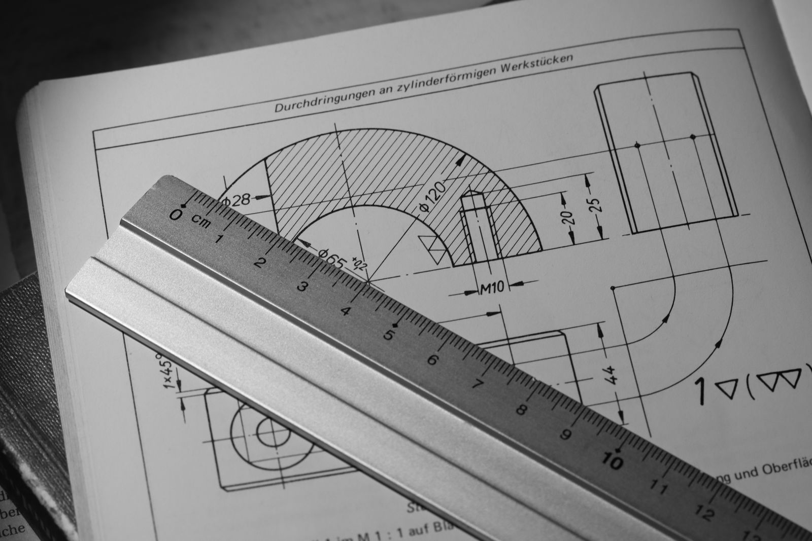

BS-300 · The practice
About the practice
I am Dr Lotte Bakker, an aerospace structural engineer. For fourteen years I worked inside agency and commercial station programmes; since 2019 I have run this practice from Noordwijk, doing the first ten per cent of structural design — the part where the load cases are chosen and the mass budget is set, and where most of a structure’s cost is quietly decided.
The practice exists because that first ten per cent is usually done fastest and defended least. A module sized on the pressure case alone looks efficient right up until the launch environment, the docking case or the fatigue spectrum sends it back. My work is the unglamorous alternative: define the load set before the geometry, size in the open, and issue a mass statement in which every line carries its basis.
Everybody falls in love with the pressure case, because it is the one equation that fits on a slide. The launch case is the one that breaks your module before it ever flies — so that is the case I run first. Preliminary mass is a promise to be wrong inside a stated band. I print the band.
Training, briefly: a doctorate in aerospace structures, a decade and a half across pressurised-module and truss programmes in Europe, and reviewer seats at more PDRs and CDRs than I accept study work from — the register on Sheet 01 is deliberately short. The practice takes one new study per quarter, because a load set defended properly is not a parallelisable thing.

BS-310 · Method
How a study runs
Requirements & load cases — before geometry
The load set, the margin policy and the interface list are agreed in writing before anything is sized. Most structural regret is born here, so this stage is not compressible.
Sizing — closed form first
Hand arithmetic of the kind the Module Sizer demonstrates, at study scale, so every number has a derivation a reviewer can follow. Finite-element models follow where the closed form runs out — and say where that was.
The mass statement
Every line carries its basis — calculated, estimated or vendor-quoted — and its growth allowance. A total without a basis column is a guess wearing a tie.
Review support
The study is defended at the client’s PDR or CDR, with questions answered from the file, not from memory. Failed options stay in the file, with their margins, so the programme never re-buys one.
BS-320 · The honesty sheet
What preliminary means
Preliminary means a band
A study-stage mass is issued with a stated growth allowance — typically +15–25% at PDR maturity, wider earlier. If a study gives you a mass without a band, it has given you the optimistic end of one and kept the rest.
Flight is verified, not asserted
Nothing flies on closed-form arithmetic — including the arithmetic on this website. Flight structure is verified by detailed analysis and a test programme: proof, burst, vibration, fatigue. This practice defines that programme; it does not replace it, and it does not certify hardware.
The pressure wall is the floor
The hoop equation returns the thinnest wall that holds pressure. Shielding, fatigue and docking loads build the real wall on top of it. Any mass quoted without them is a floor — and on this site, and in every study, it is labelled as one.
BS-330 · Engagement terms
Terms, in the open
Basis Studies are fixed-fee against a written scope and an agreed load-case list. If the case list grows mid-study, the fee conversation happens before the work, not after it.
Margin policy The margin policy is stated on page one of every study and applied uniformly — including to the options the client prefers. Especially to those.
Independence The practice takes no commission, referral fee or hospitality from fabricators, material suppliers or test houses, and names its analysis tools in every report.
Liability The practice delivers preliminary design and study work. Flight release remains with the client’s responsible engineer and their verification programme, always.
Files & IP Study files — models, mass statements, load-case definitions — transfer to the client on final payment. Failed options are part of the file and are not deleted.
Availability One new study per quarter. The current position is printed on Sheet 01 rather than discovered in a sales call.